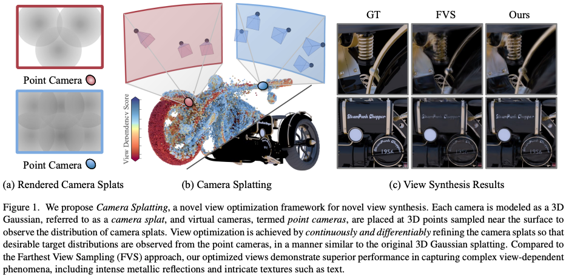
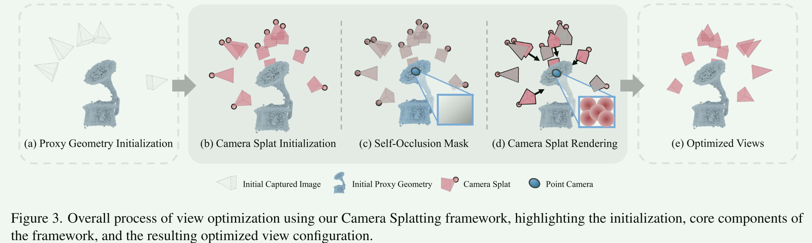
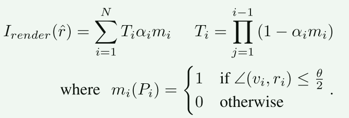
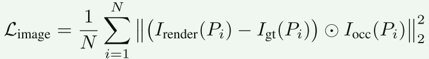
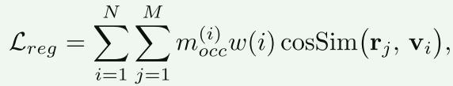
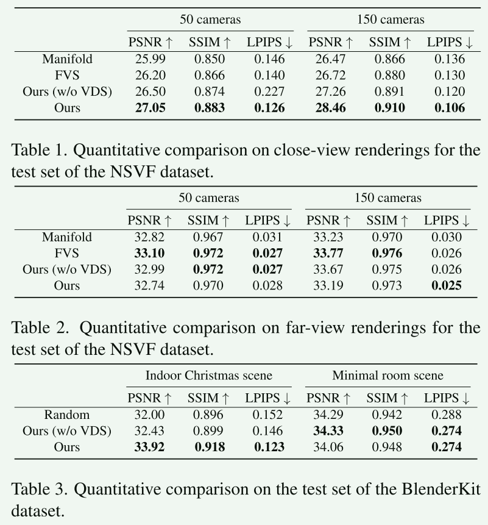

Camera Splatting （连续视图优化框架），专门解决有限相机预算下如何选择最优拍摄角度的问题：之前都是从候选位置里贪心选择；这里给出了一种 Camera Splatting 方法，把相机的选择转化成了 可微分的3D高斯优化过程。
把每个相机都建模成一个可优化的 3D 高斯分布（camera splat），然后在靠近物体表面放置虚拟相机来观察相机splat分布情况，通过连续可微来优化相机分布（如果相机的分布是完美的，那么物体表面的每个点向外看时，应该看到均匀、密集的“相机云”；如果某个地方看起来很空，就要移动相机填补）。

1. Introduction
NVS的核心是重建辐射场（Radiance Field）-》理论上要对相机的空间位置 x 和观察方向 w 密集采样 -》但是相机资源和计算资源都有限 -〉 有限相机的情况下，如何找到“信息量最大”的拍摄位置？
现在的：
- 离散选择：从事先定义的候选相机里选择几个最好的。被限制在候选集中，而且随着这个候选集合数量增加，组合的复杂度指数增加。
- 贪心选择：选好第一个位置，贪心计算第二个相机的位置。容易陷入局部最优。
一个好的方法应该： 能根据表面材质调整采样密度；相机不局限在候选集中，可以移动优化；能够联合优化而不是逐一选择（one by one）。
本文：把相机建模成 3DGS，在场景中放置虚拟观察点 point camera来观察这些camera splat。通过利用3DGS的可微渲染，借助梯度下降连续优化所有相机参数。
Optimize Scene Parameters based on Fixed Cameras -> Optimize Camera Parameters based on Fixed Proxy Geometry。这才是想法的关键驱动。
（1）View optimization for geometry reconstruction
APP,OAPP 等：主要为了把模型“建全”，最大化覆盖率。但是只看几何Geometry不看Appearance。忽略了NVS中的View-dependent appearance.
（2）View optimization for novel view synthesis
基于不确定性计算辐射场哪“不确定”（方差大），就去哪拍。
隐式处理视点依赖（通过不确定性间接反映）。
FisherRF (利用信息增益) ，ActiveNeRF (利用颜色方差) ，Manifold Sampling (利用采样方差) 。
Camera Splatting：显式建模方向采样密度，通过 Point Camera 直接观测某个点在各个方向上是否有相机覆盖。
（3）Optimization strategies
大多都是从候选集选择，简单但是限制严重；APP和Manifold 是连续的，但是采用贪心策略逐个优化，很容易局部最优。
本文利用3DGS进行连续空间下的联合优化。
2. Method
把“相机覆盖密度”转化成“渲染图像亮度”；把“材质需求”转化成“目标图像亮度”；利用 3DGS 高效进行梯度反传。

（1）Representation
Camera Splat
Ci = {ui, ci, s, θ, α} 其中，相机的位置 ui 和方向 ci都是可优化的；缩放 s 表示高斯椭球的大小，所有的相机都共享这个参数。这是为了防止优化器把一个相机变得超级大来覆盖所有区域，而不是移动多个相机去覆盖；θ, α 都是固定的。
Point Camera
在物体表面放一些虚拟相机，位置基于 proxy geometry 生成，视角是全向的（类似一个鱼眼），能看到周围所有的 camera splat。
作用：负责统计有多少个相机在拍自己。
（2）Camera Splat Rendering
利用 3DGS pipeline，但是是从物体看相机。通过渲染器的反向传播来推着相机移动。

相机朝向向量 ri 和视线向量 vi 的夹角小于相机的视场角一半 (θ/2) 时，这个高斯球才会被渲染。
输出一张“覆盖密度图”。如果 Point Camera 渲染出的图像像素很亮说明在这个方向上，有多个相机正对它（重叠了）。像素很暗则说明这个方向是盲区，没有相机在拍摄。因为整个渲染过程是可微的，Loss 通过梯度反向传播，就能直接让每一个 Camera Splat的位置和方向进行移动。
Gaussian Splatting 与 Camera Splatting 的对比：
| 属性 | 原始 3DGS | Camera Splatting |
|---|---|---|
| 被渲染对象 (Scene) | 场景中的物体 ，由数百万个彩色高斯球组成 | 相机集合，每个相机被建模成一个高斯椭球 |
| 渲染器 (Renderer) | 现实相机，是一个视锥体 | 物体表面上的 Point Camera，像一个鱼眼镜头 |
| 渲染内容 | RGB 颜色 通过混合高斯球的颜色得到图像 | 相机的覆盖密度 (Density) ，通过混合相机的“不透明度”得到覆盖热力图 |
| 渲染目的 | 得到一张逼真图像 | 检查**“Point Camera（物体）被多少相机看到了”** |
（3）Ground Truth
基础的应该是一个均匀的灰度图，表示 point camera 在各个方向都能看到同样密度的相机 Igt_base。
进阶GT：引入VDSF，不同的材质需要不同的采样密度：高光/金属部分的VDSF得分高，漫反射/平坦部分得分低。
最终的GT：在高光区域，目标图像更亮。迫使优化器把更多的 Camera Splat 移动到高光区并重叠，从而增加该区域的采样密度 。 Igt(Pi) = VDSF(Pi) × Igt_base
遮挡处理： 用 Proxy Geometry 计算遮挡，如果 Point Camera 的视线被物体自身挡住了（桌腿挡桌面），就生成一个掩码 Iocc，在计算损失时忽略这些，防止相机拍物理上看不见的地方。
（4）Optimization
ℒtotal = ℒimage + ℒreg + ℒbound


ℒimage 让渲染出来的相机分布尽可能接近理想分布，驱动相机移到采样不足区域；
有时相机即使位置对了，但可能背对物体。ℒreg 鼓励 Camera Splat 光轴 r 指向 Point Camera v。对目前相机覆盖率很低的区域权重更大，强迫相机优先填补这些盲区。
ℒbound 防止相机飞出场景边界或穿模进入物体内部。
3. Results
实验证明，显式建模“覆盖密度”（渲染 Camera Splats）比隐式计算“不确定性”更直接高效。
1 分钟（Ours） vs 1 小时（Manifold）。3DGS 光栅化代替传统体积渲染的好处。
近距离表现很好，虽提升了细节纹理（高频信息），但牺牲了一定的远景一致性。

缺点：
- 太依赖 Proxy Geometry 的质量了，如果粗扫描没做好后面就全废了。在极少纹理、极少初始视角下还是不友好；
- 纹理缺失区域失效。纯色墙面等 3DGS 难以生成有效的高斯球，导致 Proxy Geometry 在这些地方是空的，Point Camera 没地方放，导致这片区域完全没有相机去覆盖，最终重建出漏洞。
- 无法像GS一样使用分裂。